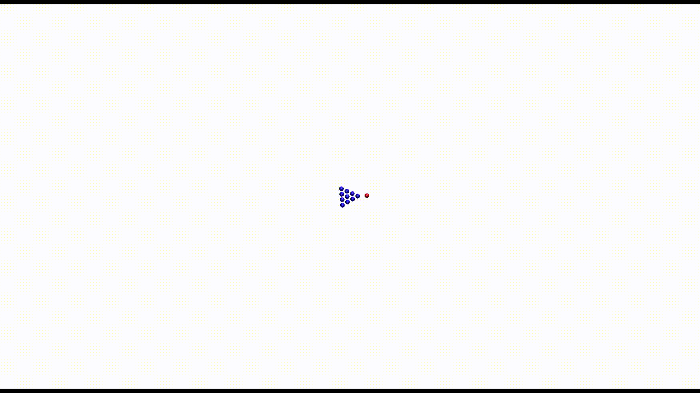

SAFARI Sample Output Files¶
These files are generally tab separated. The location and name of these files is specified via the -o argument, or is the same as for the input files if not specified. For the purpose of readability, the tab characters in the below files have been replaced with two spaces.
Production of The .spec file and The .data file can be controlled via using <type> on line 44 of the main input file Main Input File. This option is a bitmask, with the following flags:
1 - Enable The .data file output
2 - Enable The .spec file output
These can be combined to produce both files, where 3 will do this.
The .data file¶
This is the primary data output file, it will contain the final results of the trajectories, though normally will only contain the detectable particles, this can be adjusted via settings in the input files.
Here is a sample .data file.
1 2 3 4 5 6 | X0 Y0 Zm E THETA PHI ion index weight max_n min_r steps Max Error total time
2.558862 2.027624 0.856 180.633 21.042 -3.093 80002 1.000 12 0.910 224 0.185 2.693
0.908598 0.526922 0.780 213.365 50.721 -0.215 60003 1.000 12 1.068 294 0.027 3.315
2.400500 3.763921 -3.583 166.084 29.615 -2.379 64494 1.000 12 1.051 764 0.050 6.353
1.174906 2.147880 -2.809 18.778 17.251 -4.131 24671 1.000 12 0.947 1209 0.372 15.367
1.164306 3.453702 0.439 196.119 24.137 -4.210 24683 1.000 12 1.081 394 0.038 3.423
|
The columns in this file are as follows:
X0- the initial, target x coordinate for the run
Y0- the initial, target y coordinate for the run
Zm- the minimum z-coordinate of the projectile during the run
E- the final kinetic energy of the projectile
THETA- the exit angle theta of the projectile
PHI- the exit angle phi of the projectile
ion index- a unique index for this particular projectile
weight- In adaptive grid mode, this is the grid depth, otherwise is just 1
max_n- Maximum number of particles considered for interaction for this projectile
min_r- Minimum distance this projectile got to another particle
steps- Total number of integration steps required, if these numbers are significantly less than the maximum number of steps, that value should probably be reduced in the Main Input File
Max Error- Maximum change in energy encountered by the projectile during any timestep
total time- Total trajctory time in SAFARI time units (SAFARI Units)
The .spec file¶
This file contains binned collections of the final detector positions of the various particles detected. This file starts with a header describing the energy and angle ranges contained in the file. It is then separated into blocks for each energy bin. For each block, there is a table of number of detections per angular bin. Each table has a header row and column with an approximate angle set for those bins, a more precise angle can be obtained from the information in the header.
A sample of the header is below:
--------------------------------------------------------
SAFARI Spectra File, Ranges in this file are as follows:
Energy range: 0.50 to 250.00 eV
Theta range: 0.00 to 90.00 Degrees
Phi range: -15.00 to 15.00 Degrees
This file is split into blocks for each energy section
Each block contains a header row and column, which states
the theta and phi angles for those blocks respectively
Total Counts: 7800
Largest Bin: 5
(227.50eV, Theta: 73.0 Degrees, Phi: 12.3 Degrees)
--------------------------------------------------------
This header contains the various ranges involved, as well as the total number of counts represented in the detector, as well as the bin containing the highest number of detections.
The .spec file can be processed more easily for generating spectra than The .data file, the size of this file also does not depend strongly on the number of trajectories simulated, so it can be used more easily for calibrating energies, angles, image charges, etc. If The .data file output is disabled, a run can be set which generates this file for an arbitrarily long time, until there is a significant number of detections per bin, without consuming infeasibly large amounts of disk space.
The .dbug file¶
This file will contain general information about the run, and is to be used for assiting with configuration of some of the runtime parameters, such as error thresholds, etc.
The file starts with a trimmed copy of the input file, similar to the one found at Compact Input File. It is then followed by some messages about runtime, and then some statistics about the various exit conditions encountered. It also included runtime information.
Here is a sample .dbug file.
1 2 3 4 5 6 7 8 9 10 11 12 13 14 15 16 17 18 19 20 21 22 23 24 25 26 27 28 29 30 31 32 33 34 35 36 37 38 39 40 41 42 43 44 45 46 47 48 49 50 51 52 53 54 55 56 57 58 59 60 61 | Loading Info From: sample_ag
250.0 45.0 0.00 22.989 Na
0.5 250 2.5 0.5
1 f
45.0 45 15.0
1e-08 10.0
0.3 0.0 1e-06
12
t
5.0
4000
10.0 0.002
0.0 0.0003
2 100
100
0 0.040786 4.0786
0 0.040786 4.0786
666 2
5.0 5.0
4 1 0
4153.6 3.625 27017.57 7.286
2 0
1.26 2.0
300.0 0.9436337324 1
f
-1.5 8.1
4.0786 4.0786 4.0786
4
1.0 1.0 1.0 1
1.0 0.5 0.5 1
0.5 1.0 0.5 1
0.5 0.5 1.0 1
1
196.967 79 Au
5.0 5.0 5.0
t 1.5 10 2
0 0 1 f 1 1 1
0 0
Loaded SAFIO
Loaded Settings, Initializing Potentials and Temperatures
Initializing Temperature
Initialized Potentials, Building Lattice
built lattice
Printing Lattice
Running Adaptive Grid
Total Out of Phi (-5): 669979
Total Trapped (-10): 0
Total Stuck (-100): 0
Total Buried (-200): 221504
Total Froze (-300): 175983
Total OOB (-400): 1534
Total Errored (-500): 0
Total Intersected (-600): 0
Total Out of Mask: 0
Total number particles: 2129529
Time per particle: 1.875ms
Total Runtime: 3993s
|
Important to note in this file, are the error/exit conditions listed near the bottom (Lines 48-56 in the sample). These can be used for adjusting various input parameters for optimizing simulation runtime. The relevant exit conditions for adjusting input parameters are as follows:
Froze- If this number is significant, you might consider increasing the maximum allowed timestepsOOB- This is how many left the edge of the crystal, if this is significant, you should increase the size of the generated crystal
If the runtimes are unacceptably large, you can consider decreasing the number of allowed timesteps until the ratio which return as Froze becomes almost significant, likewise if memory use is too large, you can decrease the generated crystal size until the ratio returining OOB becomes significant.
Exit conditions related to particles not being detectable are as follows:
Out of Phi- This particle was not in plane with the detector and incoming beam, the thresholds on this can be set based on the detector window settings, on line 53 of input fileTrapped- The particle had left the surface, but was then re-trapped by the image potentialStuck- The particle went below the Stuck Energy threshold (See first value on line 219 of input file)Buried- The particle went more than the Buried Threshold below the surface (Second value on line 219 of the same file)
The remaining exit conditions are as follows:
Errored- The particle encountered a large discontinuity in energyIntersected- The particle intersected with another atom
The .crys file¶
After generating or loading the lattice, a .crys file will be generated with the initial, 0K state of the lattice. This file can be re-named to a .crys_in file for providing as an external lattice if needed.
This file is of identical format to the .crys_in files, but here is a sample anyway:
1 2 3 4 5 6 7 8 9 10 | 0.000000 0.000000 0.000000 29.000000 63.546000
0.000000 1.300000 -2.600000 29.000000 63.546000
0.000000 -1.300000 -2.600000 29.000000 63.546000
0.000000 2.600000 -5.200000 29.000000 63.546000
0.000000 0.000000 -5.200000 29.000000 63.546000
0.000000 -2.600000 -5.200000 29.000000 63.546000
0.000000 3.900000 -7.800000 29.000000 63.546000
0.000000 1.300000 -7.800000 29.000000 63.546000
0.000000 -1.300000 -7.800000 29.000000 63.546000
0.000000 -3.900000 -7.800000 29.000000 63.546000
|
There is also a .xyz formatted version of the file generated, for use in external visualizers such as VMD3. This file is suffixed with .crys.xyz, to separate it from the Single Shot mode files referenced below.
The corresponding such file to the above .crys file is below:
1 2 3 4 5 6 7 8 9 10 11 12 | 10
Cu 0.000000 0.000000 0.000000
Cu 0.000000 1.300000 -2.600000
Cu 0.000000 -1.300000 -2.600000
Cu 0.000000 2.600000 -5.200000
Cu 0.000000 0.000000 -5.200000
Cu 0.000000 -2.600000 -5.200000
Cu 0.000000 3.900000 -7.800000
Cu 0.000000 1.300000 -7.800000
Cu 0.000000 -1.300000 -7.800000
Cu 0.000000 -3.900000 -7.800000
|
The .sptr file¶
The inter-lattice force type mentioned around line 174 of input files is a bitmask field. In the case where 16 (and montecarlo mode) or 32 is present in this bitmask, then SAFARI also produces a file containing surface atoms which have sputtered off. A sample such file is as follows:
1 2 3 4 5 6 7 8 9 | X0 Y0 Zm E THETA PHI ion index ion err flag max_n min_r steps Max Error total time
5.422050 1.807350 0.000 1.069 88.375 0.574 60 0.000 0 2.121 5876 0.008 47.775
1.807350 1.807350 0.000 2.189 15.694 148.197 60 0.000 0 0.935 5876 0.008 47.775
3.614700 0.000000 0.000 0.508 78.522 2.583 0 -200.000 0 1.149 4637 0.048 36.343
0.000000 0.000000 0.000 8.899 38.506 -175.292 44 0.000 0 0.942 5771 0.007 46.643
7.229400 0.000000 0.000 0.023 74.856 6.367 64 -200.000 0 2.111 6040 0.078 45.892
5.422050 5.422050 0.000 1.581 81.854 89.198 24 0.000 0 1.967 6831 0.007 58.582
3.614700 3.614700 0.000 0.957 24.905 153.323 24 0.000 0 0.934 6831 0.007 58.582
5.422050 3.614700 -1.807 2.110 27.856 82.301 24 0.000 0 1.356 6831 0.007 58.582
|
The columns here are similar to .data columns, with a few differences as noted below:
X0- the 0 temperature x coordinate for the atom
Y0- the 0 temperature y coordinate for the atom
Zm- the 0 temperature z coordinate for the atom
E- the final kinetic energy of the atom
THETA- the exit angle theta of the atom
PHI- the exit angle phi of the atom
ion index- a unique index for the projectile which produced this sputter
weight- The error flag for the projectile (see dbug flags)
max_n- Maximum number of particles considered for interaction for this atom
min_r- Minimum distance this atom got to another particle
steps- Total number of integration steps for the ion that caused the sputter
Max Error- Maximum change in energy encountered by the projectile during any timestep
total time- Total trajctory time in SAFARI time units for the projectile (SAFARI Units)
Single Shot Mode Files¶
In Single Shot Mode, two additional files are generated, the .traj file, and the .xyz file.
The .traj file¶
The primary output file from single shot mod is the .traj file. This file contains a snapshot of the state of the projectile particle at each timestep of the simulation. This includes position, momentum, energy, timestep, and computed error.
Here is a sample of such a file:
1 2 3 4 5 6 | x y z px py pz t n T V E near dt dr_max
0.000000 0.000000 10.000000 0.000 0.000 -438.140 0.000000 0 1500.000 0.000 1500.000 0 0.100000 0.000
0.000000 0.000000 9.931529 0.000 -0.000 -438.140 0.010000 1 1500.000 0.000 1500.000 10 0.010000 0.000
... Many omitted lines
0.000000 0.000000 -1.716291 0.000 0.000 -2.566 49.297234 5999 0.051 0.000 0.051 10 0.010000 0.000
0.000000 0.000000 -1.716692 0.000 0.000 -2.566 49.307234 6000 0.051 0.000 0.051 10 0.010000 0.000
|
The various columns in this file can be used to generate plots, which can then be used to characterize the trajectories, this gives basic information as to the number of significant interactions, how quickly the energy is lost, etc, during the simulation.
The columns in this file are as follows:
x y z- These three columns are the position of the projectilepx py pz- These three are the momentum of the projectilet- This is the total trajctory time so far (see SAFARI Units)n- The current step, this is generally just an index of rows in the tableT- The kinetic energy of the projectileV- The total potential that the projectile is currently inE- T + V, the total energy of the projectilenear- Number of lattice sites being considered for interactiondt- Current timestep for the projectiledr_max- maximum positional error encountered so far
Plots of T vs t or V vs t can be used to gauge a general indication of the number of significant collisions which occur, as well as to get an indication of how well approximations such as the Single Binary Collision Approximation (SBCA) would apply to that particular trajectory type.
{kind=link}
The .xyz files¶
This file is produced for the purpose of generating videos of the trajctory via external software such as VMD. A sample of such a file is below:
1 2 3 4 5 6 7 8 9 10 11 12 13 14 15 16 17 18 19 20 21 22 23 24 25 26 | 11
0
Na 0.000 0.000 10.000 0.000 0.000 -438.140 63.989 0 1
Cu 0.000 0.000 0.000 0.000 0.000 0.000 63.546 1 0
Cu 0.000 1.300 -2.600 0.000 0.000 0.000 63.546 2 0
Cu 0.000 -1.300 -2.600 0.000 0.000 0.000 63.546 3 0
Cu 0.000 2.600 -5.200 0.000 0.000 0.000 63.546 4 0
Cu 0.000 0.000 -5.200 0.000 0.000 0.000 63.546 5 0
Cu 0.000 -2.600 -5.200 0.000 0.000 0.000 63.546 6 0
Cu 0.000 3.900 -7.800 0.000 0.000 0.000 63.546 7 0
Cu 0.000 1.300 -7.800 0.000 0.000 0.000 63.546 8 0
Cu 0.000 -1.300 -7.800 0.000 0.000 0.000 63.546 9 0
Cu 0.000 -3.900 -7.800 0.000 0.000 0.000 63.546 10 0
11
0.01
Na 0.000 0.000 9.932 0.000 -0.000 -438.140 63.989 0 1
Cu 0.000 0.000 -0.000 0.000 0.000 -0.008 63.546 1 1
Cu 0.000 1.300 -2.600 0.000 -0.008 -0.008 63.546 2 1
Cu 0.000 -1.300 -2.600 0.000 0.008 -0.008 63.546 3 1
Cu 0.000 2.600 -5.200 0.000 -0.008 -0.008 63.546 4 1
Cu 0.000 0.000 -5.200 0.000 0.000 -0.000 63.546 5 1
Cu 0.000 -2.600 -5.200 0.000 0.008 -0.008 63.546 6 1
Cu 0.000 3.900 -7.800 0.000 -0.008 0.008 63.546 7 1
Cu 0.000 1.300 -7.800 0.000 -0.001 0.016 63.546 8 1
Cu 0.000 -1.300 -7.800 0.000 0.001 0.016 63.546 9 1
Cu 0.000 -3.900 -7.800 0.000 0.008 0.008 63.546 10 1
|
Here is a sample of a video produced by VMD from an output .xyz file from a single shot run.
Some additions to this file¶
The timestamp for the frame is added as the “comment” line
Additional columns are added to this file from the standard files:
x-component of momentum
y-component of momentum
z-component of momentum
Mass of the particle (useful for isotope considerations)
Index of the particle (used to sort/cleanup xyz afterwards)
Interaction status, this is 0 or 1, depending on if the particle is in interaction range of the projectile